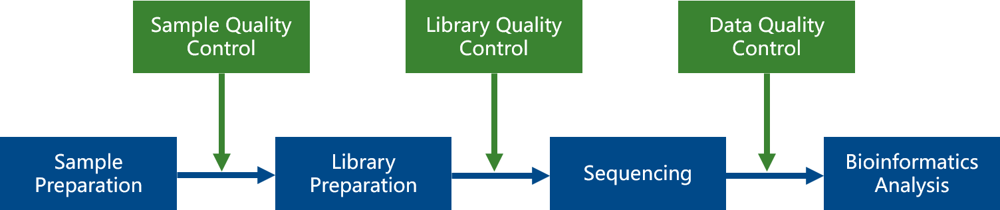
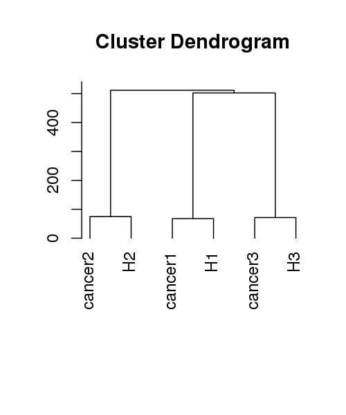
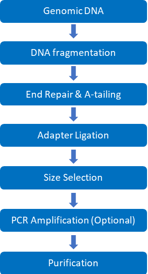
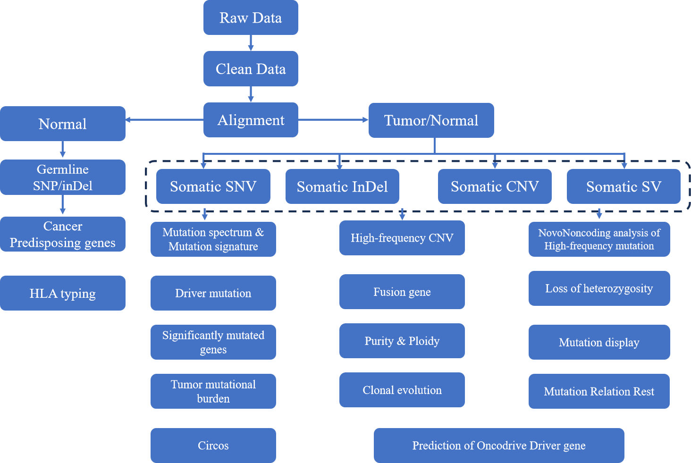
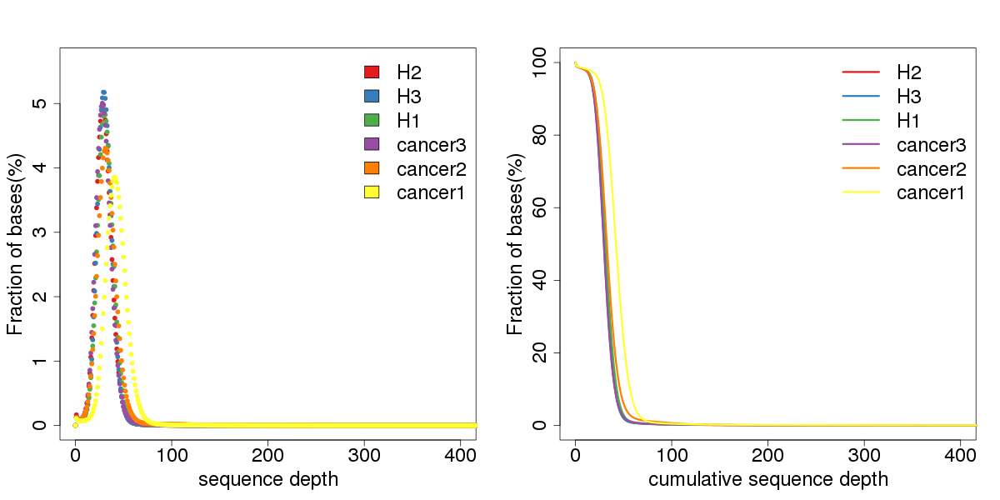
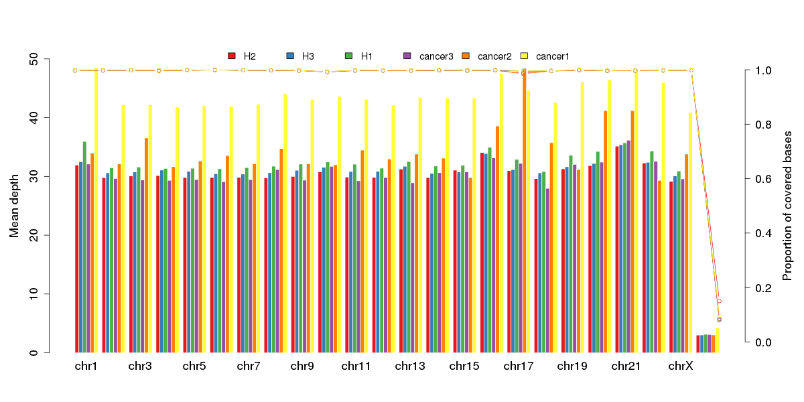
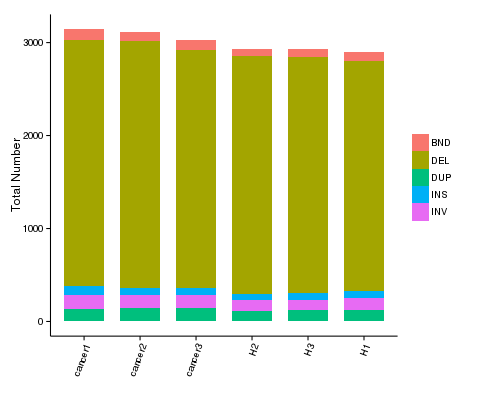
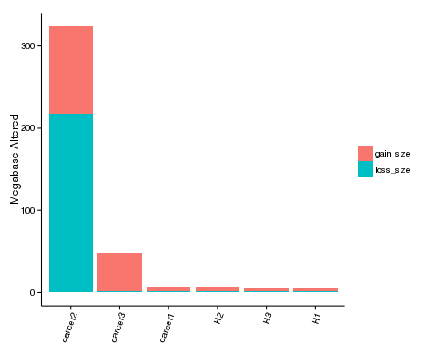
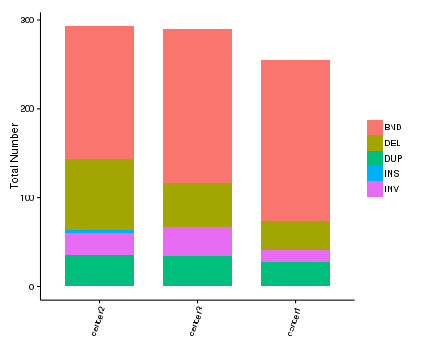
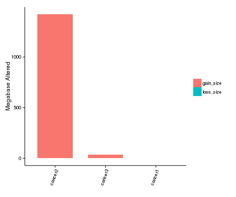

Human WGS Standard Analysis Report
| Contract ID | H20XXXXX |
| Contract Name | TESTXXXXXXXXXX |
| Batch ID | X202XXXXXX-Z01-F001 |
| Reference Genome and Version | hg38 |
| Report Time | 20250106 |
| Reminder | Partial results are presented in this report, while full results will be delivered in data release.Hyperlink of results in this report will be only valid in data release, after statement confirmation. |
1 Introduction
1.1 Background
Human whole genome sequencing enables researchers to catalog the genetic constitution of individuals and capture all the variants present in a single assay. It is applied to the study of cancer and a variety of diseases, pharmacogenomics as well as human population evolution studies.
Our company is one of the first few companies in the world employing the powerful platform, capable of sequencing up to 280,000 human genomes per year at the lowest cost per genome. We have extensive experience providing whole genome sequencing service on this powerful system, having successfully sequenced thousands of genomes with high quality results. With the throughput and capacity of the Illumina platform, our deep experience with the system, and our advanced bioinformatics capabilities, our company is able to expertly meet customer needs for executing large projects with timely turn-around and the highest quality results.
Workflow is shown as follows:

Figure 1.1 Project workflow
1.2 Sample Information
Table 1 Sample information
| PatientID | SampleID | ID | Type |
|---|---|---|---|
| P5 | H2 | FKDO230233947-1A | N |
| P7 | H3 | FKDO230233949-1A | N |
| P3 | H1 | FKDO230233945-1A | N |
| P7 | cancer3 | FKDO230233948-1A | T |
| P5 | cancer2 | FKDO230233946-1A | T |
| P3 | cancer1 | FKDO230233944-1A | T |
Type: sample type (N: normal; T: tumor; P: patient; U: unknown)
We performed cluster analysis among the samples based on the detected SNPs. The result can help to determine whether two paired samples were from the same patient.

Figure 1.2 Cluster analysis among the samples
2 Library Construction and Sequencing
2.1 Sample Quality Control
Methods of sample quality control refer to QC report.
2.2 Library Construction, Quality Control and Sequencing
The genomic DNA was randomly sheared into short fragments. The obtained fragments were end repaired, A-tailed and further ligated with Illumina adapter. The fragments with adapters were size selected, PCR amplified, and purified.
The experimental procedures of DNA library preparation are shown in Figure 2.

Figure 2 Workflow of Library construction
The library was checked with Qubit and real-time PCR for quantification and bioanalyzer for size distribution detection. Quantified libraries were pooled and sequenced on Illumina platforms, according to the effective library concentration and data amount required.
Method details involved in the project are available at method.
3 Bioinformatics Analysis Pipeline
Bioinformatics analysis includes:
1) Data quality control: filtering out reads containing adapters or with low quality;
2) Alignment with reference genome, statistics of sequencing depth and coverage;
3) SNP/InDel/SV/CNV calling, annotation and statistics;
4) Somatic SNP/InDdel/SV/CNV calling, annotation and statistics (tumor-normal paired samples).
The flowchart below depicts the pipeline of data QC and bioinformatics analysis we used. Somatic analysis will be performed only when tumor-normal paired samples are provided.

Figure 3 Bioinformatics analysis pipeline
Method details involved in the project are available at method.
4 Analysis Result
4.1 Raw Data
The original fluorescence image files obtained from sequencing platform are transformed to short reads (Raw data) by base calling. These short reads are recorded in FASTQ (.fq) format files, which contain sequence information (reads) and corresponding base quality.
Each read in FASTQ format is stored in four lines as follows:
@EAS139:136:FC706VJ:2:2104:15343:197393 1:Y:18:ATCACG
GCTCTTTGCCCTTCTCGTCGAAAATTGTCTCCTCATTCGAAACTTCTCTGT
+
@@CFFFDEHHHHFIJJJ@FHGIIIEHIIJBHHHIJJEGIIJJIGHIGHCCF
Line 1 begins with a '@' character which is followed by a sequence identifier and an optional description.
Line 2 shows the sequenced bases.
Line 3 begins with a '+' character and is optionally followed by the same sequence identifier.
Line 4 encodes the sequencing quality for each base in line 2, and contains the same number of characters as bases in line 2.
Illumina sequence identifier details:
| EAS139 | Unique instrument name |
| 136 | Run ID |
| FC706VJ | Flowcell ID |
| 2 | Flowcell lane |
| 2104 | Tile number within the flowcell lane |
| 15343 | 'x'-coordinate of the cluster within the tile |
| 197393 | 'y'-coordinate of the cluster within the tile |
| 1 | Member of a pair, 1 or 2 (paired-end or mate-pair reads only) |
| Y | Y if the read fails filter (read is bad), otherwise N |
| 18 | 0 when none of the control bits are on, Otherwise it is an even number |
| ATCACG | Index sequence |
The ASCII value of each character at the fourth line minus 33 equals to the Phred-scaled quality value of the corresponding sequenced base in the second line. The relationship between sequencing error rate (e) and base quality value (Qphred) can be expressed by the following equation:
Qphred = -10log10(e)
The table below shows examples of corresponding values among sequencing error rate (e), base quality value (Qphred) and characters.
| Sequencing error rate | Sequencing quality value | Corresponding character |
|---|---|---|
| 5% | 13 | . |
| 1% | 20 | 5 |
| 0.1% | 30 | ? |
| 0.01% | 40 | I |
4.2 Quality Control
4.2.1 Sequencing Data Filtration
Sequencing artifacts, including reads containing adapter contamination, low-quality nucleotides and unrecognizable nucleotides (N), apparently brings ambiguity for the subsequent bioinformatics analysis. Hence quality control is an essential step and applied to guarantee the meaningful analysis. All of downstream analysis will be based on clean reads that pass quality control.
Our company performed quality control according to following procedures:
1) Discard paired-end reads if either one
read contains adapter contamination (>10 nucleotides aligned to the adapter, allowing ≤ 10% mismatches);
2) Discard paired-end reads if more than 10% of bases are
uncertain (read as N) in either one read;
3) Discard paired-end reads if the proportion of
low-quality (Phred quality < 5) bases is over 50% in either one read.
DNA-Seq Adapter (Adapter, Oligonucleotide sequences for DNA Sample Prep Kits) information:
P5 adapter:
P5→P7’(5’→3’)
AATGATACGGCGACCACCGAGATCTACAC[i5]ACACTCTTTCCCTACACGACGCTCTTCCGATCT
P7 adapter:
P5→P7’(5’→3’)
GATCGGAAGAGCACACGTCTGAACTCCAGTCAC[i7]ATCTCGTATGCCGTCTTCTGCTTG
Figure 4.1 Raw data filtration result
4.2.2 Examination of Sequencing Error Rate
Sequencing error rate and base quality can be affected by various factors such as sequencing platform, chemical reagent and sample quality. Due to the consumption of chemical reagents, error rate is increasing with the read extension, which is a common feature of the high throughput sequencing platform.
Figure 4.2 Sequencing error rate distribution
The x-axis represents position in reads, and the y-axis represents the average error rate of bases of all reads at a position.
4.2.3 GC Content Distribution
Evaluation of GC content distribution aims to check the potential of AT/GC separation phenomenon, which maybe resulted from sample contamination, sequencing bias or errors in library preparation.
In theory, GC or AT content should be constant along read positions. But it is common to see that the first 6 to 7 bases in both reads (read1 & read2) fluctuate in GC content, due to primer amplification bias and some other reasons.

Figure 4.3 GC content distribution
The x-axis represents the position in reads, and the y-axis represents the percentage of each type of bases (A, T, G, C); different bases can be distinguished by different colors.
4.2.4 Sequencing Quality Distribution
The Phred-scaled quality scores of most bases should be greater than 20, it is also required for downstream analysis. Base quality decreases along reads is common, which is an inherent circumstance of next generation sequencing.
Figure 4.4 Sequencing quality distribution
The x-axis represents the position in reads, and the y-axis represents the average quality score of bases of all reads at a position.
4.2.5 Statistics of Sequencing Quality
According to the sequencing feature of sequencing platforms, our company requires the value of Q30 (the percentage of bases with Phred-scaled quality scores is greater than 30) should be above 85% for paired-end sequencing data.
Table 4.1 Overview of data production quality
| Sample name | NovoID | Flowcell/Lane | Raw reads | Raw data(G) | Effective(%) | Error(%) | Q20(%) | Q30(%) | GC(%) |
|---|---|---|---|---|---|---|---|---|---|
| H2 | FKDO230233947-1A | AHN3C3DSX5-new_L1 | 303284379 | 91.0 | 99.19 | 0.03 | 97.22 | 92.45 | 41.58 |
| H3 | FKDO230233949-1A | AHN3C3DSX5-new_L1 | 280727549 | 93.0 | 99.15 | 0.03 | 97.47 | 92.97 | 41.31 |
| H3 | FKDO230233949-1A | AHNF3LDSX5-new_L1 | 29133166 | 99.18 | 0.03 | 96.84 | 91.59 | 41.07 | |
| H1 | FKDO230233945-1A | AHN3C3DSX5-new_L1 | 321226971 | 96.4 | 99.18 | 0.03 | 97.14 | 92.30 | 41.58 |
| cancer3 | FKDO230233948-1A | AHN3C3DSX5-new_L1 | 296590422 | 90.4 | 99.22 | 0.03 | 97.63 | 93.41 | 41.64 |
| cancer3 | FKDO230233948-1A | AHNF3LDSX5-new_L1 | 4697476 | 99.26 | 0.03 | 96.97 | 91.92 | 41.41 | |
| cancer2 | FKDO230233946-1A | AHN3C3DSX5-new_L1 | 339846638 | 102.0 | 99.18 | 0.03 | 97.19 | 92.41 | 41.64 |
| cancer1 | FKDO230233944-1A | AHN3C3DSX5-new_L1 | 433307314 | 130.0 | 99.21 | 0.03 | 97.32 | 92.74 | 41.72 |
4.3 Sequence Alignment
Burrows-Wheeler Aligner (BWA) (Li et al., 2018) was utilized to map the paired-end clean reads to the human reference genome. The original mapping result can be obtained in BAM format. Sambamba (Tarasov et al., 2015) is used for sorting the BAM files, and Picard (The Quick Start is available online: https://broadinstitute.github.io/picard/) is utilized to mark duplicate reads.
Final BAM files can be obtained after these steps. Then the coverage and depth will be computed based on BAM.
4.3.1 Sequencing Depth & Coverage Distribution

Figure 4.5 Sequencing depth
The left figure shows sequencing depth distribution of all bases in each sample. The
x-axis represents the sequencing depth, and the y-axis represents the fraction of bases with the given
sequencing depth.
The right figure shows accumulative sequencing depth distribution of all bases in each sample. The
x-axis represents the accumulative sequencing depth, and the y-axis represents the fraction of bases
above the given sequencing depth.

Figure 4.6 Average sequencing depth (bar plot) and coverage (dot-line plot) in each chromosome
The x-axis represents the chromosome; the left y-axis represents the average depth; the right y-axis represents the coverage (proportion of covered bases).
4.3.2 Statistics of Mapping, Coverage and Depth
Table 4.2 Statistics of mapping, coverage and depth in each sample
| Sample name | H2 | H3 | H1 | cancer3 | cancer2 | cancer1 |
|---|---|---|---|---|---|---|
| Total | 601630292 (100%) | 614481890 (100%) | 637168474 (100%) | 597890720 (100%) | 674095984 (100%) | 859731602 (100%) |
| Duplicate | 148730085 (24.76%) | 135987563 (22.15%) | 153628775 (24.14%) | 127597204 (21.36%) | 154325515 (22.93%) | 228111208 (26.59%) |
| Mapped | 600700742 (99.85%) | 613887926 (99.90%) | 636345043 (99.87%) | 597241517 (99.89%) | 672994643 (99.84%) | 857789653 (99.77%) |
| Properly mapped | 591363808 (98.29%) | 602205988 (98.00%) | 626110904 (98.26%) | 587327996 (98.23%) | 662350664 (98.26%) | 844011338 (98.17%) |
| PE mapped | 600335286 (99.78%) | 613576696 (99.85%) | 635951020 (99.81%) | 596982908 (99.85%) | 672555420 (99.77%) | 857094002 (99.69%) |
| SE mapped | 730912 (0.12%) | 622460 (0.10%) | 788046 (0.12%) | 517218 (0.09%) | 878446 (0.13%) | 1391302 (0.16%) |
| With mate mapped to a different chr | 6428494 (1.07%) | 8706942 (1.42%) | 7167442 (1.12%) | 7161538 (1.20%) | 7546346 (1.12%) | 9579698 (1.11%) |
| With mate mapped to a different chr ((mapQ>=5)) | 4365528 (0.73%) | 6387474 (1.04%) | 4937232 (0.77%) | 4901470 (0.82%) | 5204680 (0.77%) | 6450248 (0.75%) |
| Average_sequencing_depth | 30.47 | 31.14 | 32.27 | 30.29 | 34.13 | 43.47 |
| Coverage | 99.02% | 98.99% | 98.98% | 98.96% | 98.96% | 99.02% |
| Coverage_at_least_4X | 98.64% | 98.68% | 98.66% | 98.64% | 98.65% | 98.76% |
| Coverage_at_least_10X | 97.96% | 98.07% | 98.03% | 97.95% | 98.00% | 98.34% |
| Coverage_at_least_20X | 89.14% | 91.38% | 91.70% | 88.64% | 91.58% | 97.02% |
4.4 Germline Mutation Detection
4.4.1 SNP Detection Result
Single nucleotide polymorphisms (SNPs), also known as single nucleotide variants (SNVs), constitute the largest class of genetic variants in genome. A typical human genome has about 3.6 million SNPs (DePristo et al., 2011). Statistics of detected SNPs are shown below.
Table 4.3 The number of SNPs in various genomic regions
| Sample name | H2 | H3 | H1 | cancer3 | cancer2 | cancer1 |
|---|---|---|---|---|---|---|
| CDS | 24565 | 24161 | 24291 | 24183 | 24322 | 24257 |
| synonymous_SNP | 12201 | 12153 | 12161 | 12144 | 12084 | 12162 |
| missense_SNP | 11925 | 11619 | 11732 | 11634 | 11805 | 11709 |
| stopgain | 108 | 99 | 109 | 99 | 107 | 104 |
| stoploss | 13 | 14 | 11 | 15 | 14 | 10 |
| startloss | 27 | 30 | 27 | 32 | 26 | 26 |
| unknown | 281 | 238 | 245 | 252 | 277 | 241 |
| intronic | 1327530 | 1320296 | 1322717 | 1319337 | 1321044 | 1326184 |
| UTR3 | 34760 | 34938 | 34553 | 34919 | 34648 | 34559 |
| UTR5 | 6584 | 6522 | 6525 | 6552 | 6533 | 6528 |
| splicing | 650 | 640 | 670 | 639 | 661 | 673 |
| ncRNA_exonic | 15610 | 15410 | 15222 | 15477 | 15579 | 15324 |
| ncRNA_intronic | 245175 | 245946 | 245134 | 245761 | 244289 | 245673 |
| ncRNA_splicing | 186 | 185 | 185 | 177 | 180 | 186 |
| upstream | 25330 | 24953 | 24900 | 24999 | 25272 | 24991 |
| downstream | 25983 | 26149 | 25635 | 26129 | 25796 | 25848 |
| intergenic | 2149757 | 2134022 | 2136181 | 2132590 | 2141805 | 2142141 |
| Total | 3855002 | 3832121 | 3834934 | 3829636 | 3839004 | 3845276 |

{kind=link}
{kind=link}
{kind=link}
{kind=link}
{kind=link}
Figure 4.7 Number of SNPs in various genomic regions (left pie plot); number of different types of SNPs in coding region (right pie plot)
Table 4.4 Feature of SNPs
| Sample name | H2 | H3 | H1 | cancer3 | cancer2 | cancer1 |
|---|---|---|---|---|---|---|
| Total | 3855002 | 3832121 | 3834934 | 3829636 | 3839004 | 3845276 |
| Het | 2266576 | 2243457 | 2240574 | 2240863 | 2239454 | 2251162 |
| Hom | 1588426 | 1588664 | 1594360 | 1588773 | 1599550 | 1594114 |
| ts | 2567286 | 2552036 | 2553428 | 2550870 | 2555611 | 2559544 |
| tv | 1287716 | 1280085 | 1281506 | 1278766 | 1283393 | 1285732 |
| ts/tv | 1.99 | 1.99 | 1.99 | 1.99 | 1.99 | 1.99 |
| dbSNP percentage | 3735351(96.90%) | 3711781(96.86%) | 3714103(96.85%) | 3708519(96.84%) | 3715616(96.79%) | 3722303(96.80%) |
| novel | 119651 | 120340 | 120831 | 121117 | 123388 | 122973 |
| novel_ts | 59058 | 59298 | 60457 | 60181 | 60837 | 61630 |
| novel_tv | 60593 | 61042 | 60374 | 60936 | 62551 | 61343 |
| novel_ts/tv | 0.97 | 0.97 | 1.00 | 0.99 | 0.97 | 1.00 |
4.4.2 InDel Detection Result
Small insertions and deletions (InDels) that are less than 50 bp in length constitute another class of genetic variants in human genome.
The InDels occurred in coding region or splicing sites may cause changes in transcripts and proteins. If the number of inserted or deleted nucleotides is not in frame of three or multiples of three, the entire reading frame would be altered. The statistics of InDels (DePristo et al., 2011) called in the samples are listed below:
Table 4.5 The number of InDels in various genomic regions
| Sample name | H2 | H3 | H1 | cancer3 | cancer2 | cancer1 |
|---|---|---|---|---|---|---|
| CDS | 788 | 737 | 773 | 760 | 789 | 778 |
| frameshift deletion | 159 | 149 | 169 | 152 | 159 | 175 |
| frameshift insertion | 128 | 118 | 121 | 120 | 134 | 120 |
| nonframeshift deletion | 259 | 245 | 248 | 256 | 249 | 242 |
| nonframeshift insertion | 194 | 181 | 192 | 187 | 197 | 198 |
| stopgain | 22 | 15 | 14 | 16 | 24 | 15 |
| stoploss | 2 | 3 | 2 | 2 | 1 | 1 |
| startloss | 3 | 4 | 4 | 4 | 3 | 3 |
| unknown | 19 | 13 | 19 | 14 | 21 | 20 |
| intronic | 378229 | 381335 | 378547 | 382494 | 381914 | 394252 |
| UTR3 | 10510 | 10688 | 10435 | 10668 | 10561 | 10742 |
| UTR5 | 1224 | 1193 | 1266 | 1251 | 1245 | 1294 |
| splicing | 288 | 287 | 288 | 289 | 290 | 305 |
| ncRNA_exonic | 2463 | 2406 | 2433 | 2438 | 2485 | 2475 |
| ncRNA_intronic | 63216 | 64074 | 63633 | 64056 | 63934 | 65954 |
| ncRNA_splicing | 85 | 81 | 88 | 77 | 78 | 99 |
| upstream | 7214 | 7208 | 7091 | 7308 | 7270 | 7352 |
| downstream | 7943 | 7995 | 8049 | 8019 | 7950 | 8350 |
| intergenic | 514671 | 519558 | 516895 | 518766 | 519900 | 536678 |
| Total | 986326 | 995255 | 989172 | 995815 | 996123 | 1027954 |
{kind=link}
{kind=link}
{kind=link}
{kind=link}
{kind=link}
{kind=link}
Figure 4.8 Number of InDels in various genomic regions (left); number ofdifferent types of InDels in coding region (right)
Table 4.6 Feature of InDels in genome
| Sample name | H2 | H3 | H1 | cancer3 | cancer2 | cancer1 |
|---|---|---|---|---|---|---|
| Total | 986326 | 995255 | 989172 | 995815 | 996123 | 1027954 |
| Het | 692950 | 702977 | 695872 | 706022 | 701245 | 740271 |
| Hom | 293376 | 292278 | 293300 | 289793 | 294878 | 287683 |
| dbSNP percentage | 816291(82.76%) | 819946(82.39%) | 816837(82.58%) | 819613(82.31%) | 820205(82.34%) | 839989(81.71%) |
| novel | 170035 | 175309 | 172335 | 176202 | 175918 | 187965 |
4.4.3 SV Detection Result
Structural variants (SVs) are genetic variants with relatively large size (>50 bp), including deletions, duplications, insertions, inversions and translocations. SVs may form the underlying genetic basis of individual differences, and have potential effect on disease and cancer susceptibility. The statistics of SV (Rausch et al., 2012) are shown below:
Table 4.7 SV detection result
| Sample name | DUP | INV | INS | DEL | BND |
|---|---|---|---|---|---|
| H2 | 111 | 117 | 65 | 2565 | 78 |
| H3 | 121 | 111 | 74 | 2544 | 77 |
| H1 | 121 | 127 | 77 | 2480 | 98 |
| cancer3 | 140 | 145 | 75 | 2556 | 111 |
| cancer2 | 143 | 144 | 74 | 2655 | 93 |
| cancer1 | 131 | 149 | 99 | 2646 | 121 |

Figure 4.9 Number of different types of SV in each sample
The x-axis represents samples, and the y-axis represents the number of each type of SV
4.4.4 CNV Detection Result
Copy number variants (CNVs) are genetic variants that lead to variation in copy number of relatively large fragment (longer than 50 bp) among individuals. There are two types of CNVs, i.e. gains and losses of copies. CNVs may form the underlying genetic basis of individual differences and cancer. The statistics of detected CNVs (Boeva et al., 2012) are listed below:
Table 4.8 CNV detection result
| Sample name | gain_count | gain_size | loss_count | loss_size | total_count | total_size |
|---|---|---|---|---|---|---|
| H2 | 177 | 4614177 | 150 | 2092150 | 327 | 6706327 |
| H3 | 179 | 3556179 | 176 | 2124176 | 355 | 5680355 |
| H1 | 180 | 4219180 | 151 | 1329151 | 331 | 5548331 |
| cancer3 | 259 | 45698259 | 128 | 2024128 | 387 | 47722387 |
| cancer2 | 216 | 105748216 | 181 | 218166181 | 397 | 323914397 |
| cancer1 | 223 | 5810223 | 163 | 1330163 | 386 | 7140386 |

Figure 4.10 The size of genomic regions affected by CNVs in each sample
The x-axis represents samples name, and the y-axis represents the total size of genomic regions affected by gains or losses (Mb)
4.4.5 Circos
The Circos for visualizing the genetic variants of whole genome are shown below:

{kind=link}
{kind=link}
{kind=link}
{kind=link}
{kind=link}
Figure 4.11 Circos
4.4.6 Variant Annotation
Following genomic variant detection, annotation of variants with the tool ANNOVAR (Wang et
al., 2010) in multiple aspects are performed, including protein coding changes, genomic regions affected by
the variants, allele frequency, deleteriousness prediction, etc. The main databases used are as
follows:
- RefSeq (O'Leary et al., 2016) and Gencode (Frankish et al., 2021) databases were used to find genomic regions affected by the variant and possible changes in protein.
- We annotated the features of the genomic regions affected by the variants, such as cytoband, small RNA, conserved mammalian microRNA regulatory target sites, conservative regions of vertebrates, transcription factor binding sites, repeats, etc.
- SIFT (Ng et al., 2003), PolyPhen (Adzhubei et al., 2013), MutationAssessor (Reva et al., 2011), LRT (Chun et al., 2009) and CADD (Rentzsch et al., 2019) scores were used to predict the deleteriousness of mutations. GERP++ (Huber et al., 2020) scores were used to access the conservation of mutations.
- The established databases, such as 1000 Human Genome (Abecasis et al., 2012), Exome Aggregation Consortium (ExAC) (Kobayashi et al., 2017), Genome Aggregation Database (gnomAD) (Pio et al., 2021) and exome sequencing project (ESP), were used to find alternative allele frequencies in populations that are reported.
- Databases dbSNP (Sherry et al., 2001), COSMIC (Tate et al., 2019), OMIM (Hamosh et al., 2005), GWAS Catalog (Buniello et al., 2019) and HGMD (Stenson et al., 2020) were used to find reported information of the variant, such as top SNPs in GWAS and cancer/disease associations.
- Databases including Gene Ontology (Lee et al., 2004), KEGG (Kanehisa et al., 2000), Reactome (Jassal et al., 2020), Biocarta and PID (Schaefer et al., 2009) were applied to provide functional or pathway annotation.
Table 4.9 Example of annotation result
| Priority | CHROM | POS | ID | REF | ALT | QUAL | FILTER | GeneName | Description | Func | Gene | GeneDetail | ExonicFunc | AAChange | Gencode | cpgIslandExt | cytoBand | wgRna | genomicSuperDups | Repeat | avsnp | CLNALLELEID | CLNDN | CLNDISDB | CLNREVSTAT | CLNSIG | cosmic | gwasCatalog | 1000g_SAS | 1000g_EUR | 1000g_AFR | 1000g_AMR | 1000g_EAS | 1000g_ALL | esp6500siv2_all | gnomad_exome_AF | gnomad_exome_AF_raw | gnomad_exome_AF_afr | gnomad_exome_AF_sas | gnomad_exome_AF_amr | gnomad_exome_AF_eas | gnomad_exome_AF_nfe | gnomad_exome_AF_fin | gnomad_exome_AF_asj | gnomad_exome_AF_oth | gnomad_genome_AF | gnomad_genome_AF_raw | gnomad_genome_AF_afr | gnomad_genome_AF_sas | gnomad_genome_AF_amr | gnomad_genome_AF_eas | gnomad_genome_AF_nfe | gnomad_genome_AF_fin | gnomad_genome_AF_asj | gnomad_genome_AF_oth | ExAC_ALL | ExAC_AFR | ExAC_AMR | ExAC_EAS | ExAC_FIN | ExAC_NFE | ExAC_OTH | ExAC_SAS | dbscSNV_ADA_SCORE | dbscSNV_RF_SCORE | Interpro_domain | SIFT | Polyphen2_HDIV | Polyphen2_HVAR | LRT | MutationTaster | MutationAssessor | FATHMM | phyloP100way_vertebrate | phyloP30way_mammalian | SiPhy_29way_logOdds | CADD | gerp++gt2 | REVEL | INFO | FORMAT | cancer1 | Ori_REF | Ori_ALT | shared_hom | shared_het | OMIM | GWAS_Pubmed_pValue | HGMD_Disease_ID | HGMD_Mutation_URL | PubMedID | GO_BP | GO_CC | GO_MF | KEGG_PATHWAY | PID_PATHWAY | BIOCARTA_PATHWAY | REACTOME_PATHWAY | Expression_summary | RNA tissue specificity | RNA tissue distribution | Subcellular_Location | RNA tissue specific nTPM |
|---|---|---|---|---|---|---|---|---|---|---|---|---|---|---|---|---|---|---|---|---|---|---|---|---|---|---|---|---|---|---|---|---|---|---|---|---|---|---|---|---|---|---|---|---|---|---|---|---|---|---|---|---|---|---|---|---|---|---|---|---|---|---|---|---|---|---|---|---|---|---|---|---|---|---|---|---|---|---|---|---|---|---|---|---|---|---|---|---|---|---|---|---|---|---|---|---|---|---|---|---|---|---|---|
| L | chr1 | 10492 | rs55998931 | C | T | 102.64 | PASS | . | . | intergenic | NONE,NR_046018 | dist=NONE;dist=1382 | . | . | . | . | 1p36.33 | . | Score=0.993729;Name=chr9:10843 | Score=3612;Name="2:TAR1(Satellite)" | rs55998931 | . | . | . | . | . | ID=COSN27940892;OCCURENCE=1(large_intestine),3(prostate) | . | . | . | . | . | . | . | . | . | . | . | . | . | . | . | . | . | . | 0.0288 | 0.0500 | 0.0276 | 0.0245 | 0.0601 | 0.0831 | 0.0242 | 0.0105 | 0.0365 | 0.0317 | . | . | . | . | . | . | . | . | . | . | . | . | . | . | . | . | . | . | . | . | . | . | . | . | AC=1;AF=0.5;AN=2;BaseQRankSum=1.803;DP=8;ExcessHet=0;FS=0;MLEAC=1;MLEAF=0.5;MQ=41.59;MQRankSum=-1.415;QD=12.83;ReadPosRankSum=1.1;SOR=0.693 | GT:AD:DP:GQ:PL | 0/1:4,4:8:97:110,0,97 | C | T | 0 | 1 | . | . | . | . | . | . | . | . | . | . | . | . | . | Not detected | Not detected | . | . |
| L | chr1 | 16125 | rs80224649 | T | G | 91.64 | PASS | WASH7P | . | ncRNA_intronic | NR_024540 | . | . | . | ENST00000488147.1 | . | 1p36.33 | . | Score=0.993729;Name=chr9:10843 | . | rs80224649 | . | . | . | . | . | ID=COSN19740192;OCCURENCE=1(liver),2(large_intestine) | . | . | . | . | . | . | . | . | . | . | . | . | . | . | . | . | . | . | 0.0709 | 0.1437 | 0.0231 | 0.0883 | 0.1243 | 0.1618 | 0.0818 | 0.1400 | 0.0820 | 0.0655 | . | . | . | . | . | . | . | . | . | . | . | . | . | . | . | . | . | . | . | . | . | . | . | . | AC=1;AF=0.5;AN=2;BaseQRankSum=0.835;DP=27;ExcessHet=0;FS=8.101;MLEAC=1;MLEAF=0.5;MQ=41.41;MQRankSum=-3.459;QD=3.39;ReadPosRankSum=-2.569;SOR=2.704 | GT:AD:DP:GQ:PL | 0/1:21,6:27:99:99,0,736 | T | G | 0 | 1 | . | . | . | . | . | . | . | . | . | . | . | . | . | . | . | . | . |
| L | chr1 | 40580 | . | A | G | 99.84 | PASS | . | . | intergenic | NR_026818,NM_001005484 | dist=4499;dist=28511 | . | . | . | . | 1p36.33 | . | Score=0.994828;Name=chr19:60000 | Score=747;Name="48:L2a(LINE)" | . | . | . | . | . | . | . | . | . | . | . | . | . | . | . | . | . | . | . | . | . | . | . | . | . | 0.0019 | 0.0014 | 0 | 0 | 0.0769 | 0 | 0 | 0 | 0 | 0 | . | . | . | . | . | . | . | . | . | . | . | . | . | . | . | . | . | . | . | . | . | . | . | . | AC=2;AF=1;AN=2;DP=3;ExcessHet=0;FS=0;MLEAC=1;MLEAF=0.5;MQ=42.02;QD=33.28;SOR=1.179 | GT:AD:DP:GQ:PL | 1/1:0,3:3:9:113,9,0 | A | G | 1 | 0 | . | . | . | . | . | . | . | . | . | . | . | . | . | Not detected | Not detected | . | . |
| L | chr1 | 51803 | rs62637812 | T | C | 163.64 | PASS | . | . | intergenic | NR_026818,NM_001005484 | dist=15722;dist=17288 | . | . | . | . | 1p36.33 | . | Score=0.994828;Name=chr19:60000 | Score=2373;Name="65:AluYj4(SINE)" | rs62637812 | . | . | . | . | . | . | . | . | . | . | . | . | . | . | . | . | . | . | . | . | . | . | . | . | 0.3829 | 0.3431 | 0.2757 | 0.4704 | 0.3834 | 0.5733 | 0.4277 | 0.4279 | 0.3873 | 0.4017 | . | . | . | . | . | . | . | . | . | . | . | . | . | . | . | . | . | . | . | . | . | . | . | . | AC=1;AF=0.5;AN=2;BaseQRankSum=1.772;DP=41;ExcessHet=0;FS=6.236;MLEAC=1;MLEAF=0.5;MQ=44.64;MQRankSum=-0.118;QD=3.99;ReadPosRankSum=0.889;SOR=1.817 | GT:AD:DP:GQ:PL | 0/1:33,8:41:99:171,0,1046 | T | C | 0 | 1 | . | . | . | . | . | . | . | . | . | . | . | . | . | Not detected | Not detected | . | . |
Result:03.Result_Homo_sapiens/result/Mutation/SNP/Annotation
4.5 Somatic Mutation Detection
Somatic mutations refer to those variants that occur in somatic cells instead of germ cells. They neither inherit from parents nor pass on to offspring, but could cause changes in the genetic structure of some contemporary cells. The driver mutations that included in somatic mutations play important roles in tumorigenesis and further evolution. Therefore, focusing on the somatic mutations is the key point of tumor research, and it is the feature that different from disease research.
4.5.1 Somatic SNP Detection Result
We used the tool MuTect(Cibulskis et al., 2013) to detect somatic SNPs, and the tool Strelka (Saunders et al., 2012)to detect somatic InDels. The statistics of detected somatic SNPs in the tumor samples are listed below:
Table 4.10 The number of somatic SNPs in various genomic regions
| Sample name | cancer1 | cancer3 | cancer2 |
|---|---|---|---|
| CDS | 44 | 29 | 122 |
| synonymous_SNP | 11 | 9 | 33 |
| missense_SNP | 27 | 18 | 81 |
| stopgain | 2 | 2 | 7 |
| stoploss | 0 | 0 | 0 |
| unknown | 4 | 0 | 1 |
| intronic | 933 | 834 | 3067 |
| UTR3 | 28 | 30 | 94 |
| UTR5 | 10 | 14 | 32 |
| splicing | 1 | 3 | 2 |
| ncRNA_exonic | 23 | 27 | 42 |
| ncRNA_intronic | 248 | 218 | 690 |
| ncRNA_splicing | 0 | 1 | 0 |
| upstream | 40 | 31 | 72 |
| downstream | 27 | 16 | 52 |
| intergenic | 2471 | 2149 | 6835 |
| Total | 3827 | 3353 | 11010 |
Result:03.Result_Homo_sapiens/result/Somatic/Somatic_SNP
4.5.2 Somatic InDel Detection Result
Table 4.11 The number of somatic InDel in various genomic regions
| Sample name | cancer1 | cancer3 | cancer2 |
|---|---|---|---|
| CDS | 6 | 2 | 8 |
| frameshift_deletion | 1 | 1 | 1 |
| frameshift_insertion | 0 | 0 | 1 |
| nonframeshift_deletion | 4 | 1 | 5 |
| nonframeshift_insertion | 0 | 0 | 0 |
| stopgain | 0 | 0 | 1 |
| stoploss | 0 | 0 | 0 |
| unknown | 1 | 0 | 0 |
| intronic | 2462 | 2210 | 2391 |
| UTR3 | 73 | 59 | 56 |
| UTR5 | 7 | 10 | 6 |
| splicing | 3 | 5 | 3 |
| ncRNA_exonic | 14 | 8 | 9 |
| ncRNA_intronic | 325 | 323 | 384 |
| ncRNA_splicing | 1 | 0 | 1 |
| upstream | 27 | 33 | 27 |
| downstream | 48 | 52 | 43 |
| intergenic | 2794 | 2441 | 2959 |
| Total | 5762 | 5146 | 5887 |
4.5.3 Somatic SV Detection Result
Statistics of detected somatic SVs(Rausch et al., 2012) are listed below:
Table 4.12 Statistics of detected somatic SVs
| Sample name | DUP | INV | INS | DEL | BND |
|---|---|---|---|---|---|
| cancer1 | 29 | 13 | 0 | 32 | 181 |
| cancer3 | 35 | 33 | 0 | 49 | 172 |
| cancer2 | 36 | 25 | 3 | 80 | 149 |

Figure 4.12 Number of different types of somatic SV in each sample
The x-axis represents the samples, and the y-axis represents the number of each type of SV.
4.5.4 Somatic CNV Detection Result
Statistics of detected somatic CNVs(Boeva et al., 2012) are listed below:
Table 4.13 Statistics of detected somatic CNVs
| Sample name | gain_count | gain_size | loss_count | loss_size | total_count | total_size |
|---|---|---|---|---|---|---|
| cancer1 | 63 | 2368063 | 5 | 35005 | 68 | 2403068 |
| cancer3 | 154 | 38611154 | 3 | 15003 | 157 | 38626157 |
| cancer2 | 1609 | 1421256110 | 12 | 1075012 | 1621 | 1422331122 |

Figure 4.13 The size of genomic regions affected by somatic CNVs in each sample
The x-axis represents the samples, and the y-axis represents the total size of genomic regions affected by gains or losses (Mb).
4.6 Advanced analysis
4.6.1 Screening for Predisposing Genes
Predisposing genes are mutated genes that are associated with increased susceptibility to cancer. In this analysis, the called SNPs/InDels in normal samples were screened for possible predisposing genes based on the following filtering criteria:
- Filter out variants with sequencing depth lower than 10X
- Filter out variants affecting genes not included in the list of genes reported by Cancer Gene Census (CGC);
- Filter out synonymous mutations and variants within intergenic, noncoding and intronic regions;
- Filter out variants located in segmental duplication or repetitive regions;
- Filter out variants based on deleteriousness predictions with four types of scores, including SIFT, Polyphen2 HVAR, Polyphen2 HDIV and MutationTaster scores (predicted as 'damaging' by at least one type of scores, or 'possibly damaging' by ≥ 2 types of scores)
Figure 4.3 predisposing genes landscape map
The abscissa is the sample, the ordinate is the gene, the top is the number of mutations in susceptible genes in each sample, and the right is the number of mutations in each gene in these samples. Using oncoprint mapping, take the first 30 susceptibility gene mutations to display normal samples. If the samples do not have the 30 gene mutations, they will not be displayed by default.
Through the CGC（Cancer Gene Census, http://cancer.sanger.ac.uk/cancergenome/ projects/census/）、FACD（Familial Cancer Database, http://www.familialcancerdatabase.nl/）、intOGen（Martínez-Jiménez et al.，2020） and the reported genes summarized in nature literature by our company, annotate the above screening results, so as to further interpret the results according to personalized research needs.
Table 4.8 Predisposing gene screening results
03.Result_X202XXXXXX-Z01-F001_Cancer/result/Pro/PredisposeGenes
4.6.2 Mutational Spectrum & Mutational Signature Analysis
Mutational spectrum and mutational signature analyses were performed based on somatic SNVs. From the results, we can know the proportion and pattern of each type of substitutions (e.g. C>A/G>T) across tumor samples, which may help us reveal the mutational processes underlying the development of cancer.
4.6.2.1 Mutational Spectrum
Six substitution types of point mutations were considered in this analysis, including C>A/G>T, C>G/G>C, C>T/G>A, T>A/A>T, T>C/A>G and T>G/A>C. The figures below show the results of mutational spectrum analysis:

{kind=link}
{kind=link}
Figure 4.4 The bar plot and heatmap of mutational spectrum
In the bar plot of mutational spectrum, the horizontal axis represents samples, and the vertical axis represents the proportion of each substitution type. Different types are distinguished by different colors.
In the heatmap of mutational spectrum, each column represents one sample, and each row represents one type of substitutions. The darker the color is, the higher the proportion of one substitution type is.
4.6.2.2 Mutational signature
Somatic mutations are present in all cells of the human body and occur throughout life. They are the consequence of multiple mutational processes, including the intrinsic slight infidelity of the DNA replication machinery, exogenous or endogenous mutagen exposures, enzymatic modification of DNA and defective DNA repair. Different mutational processes often generate different combinations of mutation types, termed ‘mutational signatures’. The profile of each signature is displayed using the six substitution types: C>A, C>G, C>T, T>A, T>C, and T>G (all substitutions are referred to by the pyrimidine of the mutated Watson–Crick base pair). Further, each of the substitutions is examined by incorporating information on the bases immediately 5’ and 3’ to each mutated base generating 96 possible mutation types (6 types of substitution * 4 types of 5’ base * 4 types of 3’ base). In this analysis, mutational signatures were obtained by an approach named Nonnegtive Matrix Factorization (NMF).

{kind=link}
{kind=link}
{kind=link}
Figure 4.5 Identified mutational signature
The first figure shows mutational signatures. The mutation types are on the horizontal axes, whereas vertical axes depict the percentage of mutations attributed to a specific mutation type.
The second figure shows the proportion of each type of mutational signatures in each sample.
The third figure shows hierarchical clustering of cosine similarities between the identified mutational signatures in samples (Signature A/B/C) and 30 known mutational signatures. The darker the color is, the closer the cosine similarity value is to 1 and the more likely the two compared signatures are actually the same.
Table 4.9 Mutational signature annotation
4.6.3 Identification of Known Driver Genes
Cancer is essentially a 'disease of the genome', which evolves with accumulations of tens to thousands of mutations. However, only a few of them 'drive' tumorigenesis by affecting genes, i.e. driver genes, which upon alteration confer selective growth advantage to tumor cells. Hundreds of driver genes have been reported by previous researches. Identification of known driver genes in our tumor samples may help us pinpoint the key genes critical for cancer initiation and progressions.
- Filter out variants with sequencing depth lower than 10X
- Filter out variants affecting genes not included in the above list of known driver genes,Filter out variants recorded in dbSNP database (dbSNP144), but keep those that have deposited in COSMIC database (comsic70) or with low (<0.01) alternative allele frequency reported by 1000 Genome project (1000g2015aug_all)
- Filter out synonymous mutations and variants within intergenic, noncoding and intronic regions;
- Filter out variants located in segmental duplication or repetitive regions;
- Filter out variants based on deleteriousness predictions with four types of scores, including SIFT, Polyphen2 HVAR, Polyphen2 HDIV and MutationTaster scores (predicted as 'damaging' by at least one type of scores, or 'possibly damaging' by ≥ 2 types of socores)
Then the somatic mutation obtained by screening was compared with the known driver genes in the database to screen out the known driver genes in the tumor sample.
The sources of known driver genes:：
- CGC513: Driver genes listed in Cancer Gene Census(CGC) database;
- Bert Vogelstein125: 125 mut-driver genes reported by Vogelstein et al (2013, Science 339: 1546-1558)
- SMG127: 127 significantly mutated genes reported by Kandoth et al (2013, Nature 502: 333-339)
- Comprehensive435: 435 driver genes (291 high-confidence drivers and 144 candidate drivers) reported by Tamborero et al (2013, Sci Rep 3: 2650).
Figure 4.6 Landscape map of known driver genes
Note：The abscissa is the sample, the ordinate is the gene, the top is the number of mutations of each sample in the driver gene, and the right is the number of mutations of each gene in these samples. Using oncoprint mapping, take the top 30 driver gene mutations to display tumor samples. If the samples do not have the 30 gene mutations, they will not be displayed by default.
Table 4.10 Known driver gene analysis results
03.Result_X202XXXXXX-Z01-F001_Cancer/result/Pro/KnownDriverGenes
4.6.4 Significantly mutated genes
Significantly mutated genes（Significantly mutated genes, SMG）refer to those that show a significantly higher mutation rate than the background mutation rate (BMR), which indicates positive selection during tumorigenesis.Cellular pathways with significant accretions of somatic mutations are known as significantly mutated pathways (SMPs). Analyses on SMGs and SMPs help us pinpoint the key genes and pathways critical for cancer initiation and progression. We performed the identification of SMGs and SMPs with both SNVs and InDels considered. All analyses were performed with modules of the software MuSic.
4.6.4.1 A summary of the identified SMGs
A summary of the identified SMGs is shown below：
Table 4.11 Identified significantly mutated genes
| #Gene | Indels | SNVs | Tot Muts | Sample Affect | Sample Percent(%) | P-value FCPT | P-value LRT | P-value CT | FDR FCPT | FDR LRT | FDR CT |
|---|---|---|---|---|---|---|---|---|---|---|---|
| RFPL4AL1 | 0 | 2 | 2 | 1 | 33.33 | 0.002 | 2.673e-07 | 2.684e-07 | 1.000 | 0.004 | 0.005 |
| KMT2C | 0 | 3 | 3 | 2 | 66.67 | 0.002 | 4.481e-07 | 8.196e-07 | 1.000 | 0.004 | 0.008 |
| KRT16 | 0 | 2 | 2 | 1 | 33.33 | 0.010 | 3.318e-06 | 4.696e-06 | 1.000 | 0.013 | 0.030 |
| DDX11 | 0 | 2 | 2 | 2 | 66.67 | 0.019 | 7.471e-07 | 1.105e-05 | 1.000 | 0.005 | 0.048 |
| DGKE | 0 | 2 | 2 | 1 | 33.33 | 0.028 | 1.515e-06 | 1.514e-05 | 1.000 | 0.007 | 0.048 |
| HS6ST1 | 0 | 2 | 2 | 1 | 33.33 | 0.021 | 1.164e-05 | 1.451e-05 | 1.000 | 0.032 | 0.048 |
| KIF20B | 0 | 2 | 2 | 1 | 33.33 | 0.058 | 6.972e-05 | 5.970e-05 | 1.000 | 0.134 | 0.143 |
4.6.4.2 Heatmap of significantly mutated genes
A Heatmap showing mutation types of each identified SMG across samples is shown below:
Figure 4.7 A Heatmap showing mutation types of each identified SMG across samples
Note:The bar plot at the top shows mutation rate of each sample (Mutations/Mb). The heatmap in the center shows mutation types of each SMG across samples. The horizontal axis represents samples, and the vertical axis represents SMGs. Different mutation types are distinguished by different colors. The bar plot on the left side of the heatmap shows percent of samples affected by mutations in each SMG, and the plot on the right side shows p values of SMGs.
4.6.4.3 Significantly mutated pathways
Databases used include KEGG, Biocarta, Protein Interaction Database and Reactome
Table 4.12 Significantly mutated pathways
4.6.5 tumor mutational burden
Tumor mutational burden（TMB）is a measure of the number of somatic protein coding base mutations that occur in tumor samples. It generally refers to the number of somatic nonsynonymous mutations (snvs and indels) per megabase pair (MB) in a specific genomic region, which can indirectly reflect the ability and degree of neoantigens produced by tumors（Schumacher et al., 2015; Chalmers et al., 2017）。High tumor mutational burden (TMB), an emerging biomarker sensitive to immune checkpoint inhibitors, has been demonstrated to be more significantly associated with PD-1 or PD-L1 immunotherapy response than PD-1 or PD-L1 expression(Chalmers et al., 2017)High TMB can assist in predicting the efficacy of immunotherapy in patients with non-small cell lung cancer, small cell lung cancer, urothelial cancer, endometrial cancer, breast cancer, colorectal cancer and melanoma（Rizvi ec al. 2015; Rosenberg et al., 2016; Chan et al., 2019）。
The non synonymous mutations of somatic mutation (SNV, indel) in the patient's tumor tissue were used to calculate the TMB. The specific analysis strategy was as follows:
1) Filter out variants with depth lower than 10×
2）Keep variants with VAF ≥ 5% ;
3）Keep variants with 1000 genome、GnomAD（Pio et al., 2021）、Exac database （AF<1%）；
4）According to the CDs interval length, calculate the TMB value;
Table 4.13 Tumor mutational burden(SNP&InDel)
| Sample | Num_mutations | Num_nonsy | TMB_nonsy |
|---|---|---|---|
| cancer3 | 31 | 14 | 0.3473 |
| cancer2 | 129 | 71 | 1.7612 |
| cancer1 | 45 | 16 | 0.3969 |
4.6.6 HLA Typing
HLA is one of the most polymorphic regions in the human genome, characterized by high GC content, making direct alignment with reference genes less effective. The International Immunogenetics Information System (IMGT) is a comprehensive database focusing on vertebrate immunoglobulins, T-cell receptors (TCR), and the major histocompatibility complex (MHC). Using reference genome maps constructed from the IMGT database enables more precise alignment and analysis of target sequences.
HLA-HD is employed for HLA gene typing, typically achieving four-digit precision, with a maximum of eight-digit high-resolution typing. As shown in the figure, based on the level of differentiation, HLA typing can be classified into four categories: two-digit, four-digit, six-digit, and eight-digit. Two digits represent allele groups, which generally correspond to homologous serological antigens. Four digits can distinguish different subtypes within the same group, including distinct coding proteins caused by mutations. Six digits further differentiate sequence changes from nonsynonymous mutations, while eight digits rely on information outside coding regions, identifying distinct sequences in non-coding regions. Generally, for studying the relationship between antigens and tumors, four-digit resolution is required. Due to technical limitations, achieving eight-digit resolution is often difficult.
Table 4.14 HLA Typing Results
| Sample | Gene | Allele1 | Allele2 |
|---|---|---|---|
| H1 | A | HLA-A*02:01:01 | - |
| H1 | B | HLA-B*67:01:02 | HLA-B*46:01:01 |
| H1 | C | HLA-C*07:02:01 | HLA-C*01:02:01 |
| H1 | DRB1 | HLA-DRB1*09:01:02 | - |
| H1 | DQA1 | HLA-DQA1*03:02:01 | - |
| H1 | DQB1 | HLA-DQB1*03:03:02 | - |
| H1 | DPA1 | HLA-DPA1*04:01 | HLA-DPA1*02:02:02 |
| H1 | DPB1 | HLA-DPB1*05:01:01 | HLA-DPB1*107:01 |
| H1 | DMA | HLA-DMA*01:01:01 | HLA-DMA*01:02 |
| H1 | DMB | HLA-DMB*01:01:01 | HLA-DMB*01:03:01 |
| H1 | DOA | HLA-DOA*01:01:02 | HLA-DOA*01:01:01 |
| H1 | DOB | HLA-DOB*01:01:01 | - |
| H1 | DRA | HLA-DRA*01:01:01 | - |
| H1 | DRB2 | Not typed | Not typed |
| H1 | DRB3 | Not typed | Not typed |
| H1 | DRB4 | HLA-DRB4*01:03:01 | - |
| H1 | DRB5 | Not typed | Not typed |
| H1 | DRB6 | Not typed | Not typed |
| H1 | DRB7 | HLA-DRB7*01:01:01 | - |
| H1 | DRB8 | HLA-DRB8*01:01 | - |
| H1 | DRB9 | HLA-DRB9*01:01:01 | - |
| H1 | E | HLA-E*01:01:01 | - |
| H1 | F | HLA-F*01:01:01 | - |
| H1 | G | HLA-G*01:01:01 | - |
| H1 | H | HLA-H*01:01:01 | - |
| H1 | J | HLA-J*01:01:01 | - |
| H1 | K | HLA-K*01:02 | - |
| H1 | L | HLA-L*01:01:01 | HLA-L*01:02 |
| H1 | T | HLA-T*01:01:01 | - |
| H1 | V | HLA-V*01:01:01 | - |
| H1 | W | HLA-W*03:01:01 | - |
| H1 | Y | Not typed | Not typed |
Results directory: 03.Result_X202XXXXXX-Z01-F001_Cancer/result/Pro/HLA
4.6.7 Genomic variation Circos
We use Circosto show the somatic variants that occurred in the tumor samples.

Figure 4.9 Circos
03.Result_X202XXXXXX-Z01-F001_Cancer/result/Pro/Circos
4.6.8 High frequency CNV analysis
Somatic mutations refer to those variants that occur in somatic cells instead of germ cells. They neither inherit from parents nor pass on to offspring, but could cause changes in the genetic structure of some contemporary cells. The driver mutations that included in somatic mutations play important roles in tumorigenesis and further evolution. Therefore, focusing on the somatic mutations is the key point of tumor research, and it is the feature that different from disease research.
4.6.8.1 Distribution of CNV in tumor samples
We used Control-FREEC for the detection of somatic CNV and analyzed the sub allele frequency (BAF) at the SNP site. The following figure shows the distribution of CNV and BAF in the genome.
Figure 4.10 The distribution of CNV and BAF in the genome
The above figure shows the distribution of CNV throughout the entire genome. The horizontal coordinates are chromosomes 1-22, with red indicating an increase in copy number, blue indicating a decrease in copy number, and green indicating no change in copy number. The following figure shows the distribution of BAF, with orange indicating consistent distribution of AB alleles, blue indicating a preference for AB allele distribution, and BAF separation of 0,1 indicating a loss of heterozygosity (LOH).。
Figure 4.11 The distribution of CNV in tumor samples
The horizontal axis represents chromosomes 1-22, and the vertical axis represents different samples. The red and blue parts in the figure represent the somatic CNVs in the individual. The red represents an increase in copy number, while the blue represents a decrease in copy number. The darker the color, the greater the change in copy count.
4.6.8.2 High frequency CNV analysis
We use GISTIC（Mermel et al., 2011）to evaluate the reproducibility of copy number variation. The results are as follows:
Figure 4.15 GISTIC high-frequency CNV analysis results
| Cytoband | Wide Peak Boundaries | q_value | residual_q_value |
|---|---|---|---|
| 17q23.2 | chr17:60500001-60596999 | 0.079338 | 0.079338 |
| 17q12 | chr17:39586001-40011999 | 0.079338 | 0.079338 |
| 17q11.2 | chr17:29744001-29893999 | 0.12418 | 0.12418 |
Figure 4.12 Distribution of high frequency CNVs
The abscissa in the figure is chromosome 1-22, and the sex chromosome is not considered in this analysis; The ordinate represents the gistic software's score on the high-frequency CNV segment. The higher the score, the higher the frequency of CNV occurrence in this segment. AMP (red) indicates copy number gain and del (blue) indicates copy number loss.
03.Result_X202XXXXXX-Z01-F001_Cancer/result/Pro/GISTIC
4.6.9 Fusion gene
Fusion gene refers to a chimeric gene constructed by end-to-end connection of the coding regions of two or more genes, which are under the regulation of the same group of regulators. Based on the information of structural variants, we detected possible fusion genes through dissecting events that breakpoints of structural variants are localized in genic regions.
Table 4.16 Fusion gene analysis
According to the detected fusion gene information, it is integrated into a Circos diagram to visually display the data. Through the Circos diagram, we can intuitively observe the chromosomal location where the fusion gene occurs and the type of fusion gene.
Figure 4.13 Circos diagram of fusion gene
Note：Circos diagram from outside to inside, 2 rings in total.
1）Outer ring - the first ring, indicating the chromosome, and the number is the corresponding chromosome number
2）Inner loop - loop 2, fusion gene results. Different colors indicate different mutation types, rose red indicates interchromosomal structural variation (CTX), and blue indicates intrachromosomal structural variation (itx)
03.Result_X202XXXXXX-Z01-F001_Cancer/result/Pro/FusionGenes
4.6.10 Purity & Ploidy Analyses
When DNA is extracted from mixed samples that contain both tumor and normal tissues, the proportion of tumor cells (purity) and the absolute copy number of the tumor genome (ploidy) are unknown to us. To estimate the purity and ploidy of samples, we used the software ABSOLUTE that makes use of the information about the allele frequency of somatic variants.
Table 4.17 Purity and ploidy analysis results of Absolute
03.Result_X202XXXXXX-Z01-F001_Cancer/result/Pro/Absolute
4.6.11 Intra-tumor Heterogeneity Analysis
Cancer is a disease largely driven by accumulated somatic mutations. Many of these are clonal mutations and occur in the founding cell to initiate cancer. They become uniformly present in the tumor. Others are subclonal mutations, which occur in an existing neoplastic cell and then passed on only to the subpopulation of cells. Subclonal populations thus contain all of the founding clonal mutations, as well as subclonal mutations. Intra-tumor heterogeneity refers to the heterogeneous composition of tumor cells. Deciphering the intra-tumor heterogeneity and clonal architecture may contribute to understanding of therapy resistance.
The softwarePyClonewas used to perform this analysis
4.6.11.1 Somatic mutation CCF calculations
CCF (cancer cell fraction), also known as cancer cell fraction of mutation, refers to the proportion of tumor cells carrying a certain mutation in all tumor cells. CCF value is the core basis for pyclone to study the clonal structure. It mainly uses the purity of tumor cells, genomic copy number changes of tumor samples and allele frequency of somatic mutations to accurately quantify the proportion of mutant tumor cells, and then analyzes the clonal structure of tumor tissues. The CCF of each mutation site in tumor cells is shown in the table below.
Table 4.18 Somatic Mutation CCF Analysis Results
4.6.11.2 Single sample clone structure analysis
The heterogeneity of cancer can be divided into inter individual heterogeneity, intra individual tumor heterogeneity, and intra individual tumor heterogeneity, as shown in the following figure. According to the selection of samples, corresponding clone evolution analysis can be conducted, and the single sample clone structure mainly studies the heterogeneity within tumor samples.
Figuer 4.14 Schematic diagram of tumor heterogeneity hierarchy
The existence of tumor heterogeneity may lead to drugs selectively killing only a portion of tumor cells, while surviving tumor cells may gradually evolve from subclones to primary clones. The CCF value reflects the proportion of tumor cells with this mutation, which is closer to 1, indicating that it is an early mutation that is common to all tumor cells, that is, a dominant clonal mutation; The smaller the CCF value, the more subclonal mutations are present in only some tumor cells. This analysis is implemented by default using Cyclone software, and the clone structure analysis results of the sample are shown in the following figure。
{kind=link}
{kind=link}
{kind=link}
Figure 4.15 clonal analysis（Pyclone）
The horizontal axis in the figure represents the frequency of mutated tumor cells (CCF), and the vertical axis represents the gene where the mutation site is located. In the figure, the frequency of mutated cells is represented in red. The closer the cell frequency of the mutation is to 1, it indicates that it is a master clone mutation, and the smaller the value of cell frequency, it indicates that it is a subclone mutation.
03.Result_X202XXXXXX-Z01-F001_Cancer/result/Pro/Clone/pyclone
4.6.12 Mutation Relation Test of Significantly Mutated Genes
Mutation relation test (MRT) attempts to reveal correlations and mutual exclusion relationships among significantly mutated genes in a pairwise fashion. Positive correlations suggest that the two genes are mutated concurrently and putatively function synergistically to promote carcinogenesis. Negative correlations imply that the two genes are mutated exclusively and mutations of the two genes may be driver events acting independently for carcinogenesis. In this analysis, we tried to find any relationships among mutated genes by using the MRT module of the toolkit MuSic (Dees N D et al. 2012). Normally, the identified significantly mutated genes (SMGs) by the SMG module of MuSic are considered for this test. However, in the case that the number of identified SMGs is less than 2, the 50 genes most frequently affected by somatic mutations of all samples are considered for this test.
Table 4.19 Result of MRT analysis
The figure is based on the values of "Pvalue_And" shown in the above table.
Figure 4.16 A heatmap showing concurrent relationship among significantly mutated genes
Both the x-axis and y-axis represent significantly mutated genes. The darker the color is, the more reliable the relationship is
The figure is based on the values of "Pvalue_Xor" shown in the above table.
图4.17 A heatmap showing mutual exclusion relationship among significantly mutated genes<
Both the x-axis and y-axis represent significantly mutated genes. The darker the color is, the more reliable the relationship is.
03.Result_X202XXXXXX-Z01-F001_Cancer/result/Pro/Mrt
4.6.13 Oncodrive driven gene prediction
Identifying driving genes from a large number of Somatic Mutations remains one of the challenges in cancer genome research. Although some known driving genes have been obtained through databases and reported scientific literature, there are still many unknown driving genes that need to be predicted and studied. In order to comprehensively predict the driving genes related to cancer, we will analyze them from three different levels: Significantly Mutated Genes (SMG), Mutation Clustering Bias (CUST bias), and Functional Impact (FI), and integrate the results.
- Based on SMG analysis, it refers to mining high-frequency mutated genes (RMG) from the background mutation rate, which shows the results of basic analysis of A+version of high-frequency mutated gene Music.
- Analysis based on mutation clustering bias refers to the tendency to cluster mutations in specific regions of a protein to form mutation clusters (CFUST bias).
- FI based analysis refers to the preference for functional mutation accumulation (FM bias), which focuses on the protein harmfulness caused by mutations.
4.6.13.1 OncodriveCLUST
Due to the lack of selection pressure, synonymous mutations are randomly and evenly distributed throughout the entire gene, while gain of function mutations often aggregate to form mutation clusters in specific regions of the protein. The differences in distribution characteristics indicate that gain of function mutations give cancer cells a selective growth advantage, Therefore, it is under positive selection pressure during the process of tumor occurrence and development. The OncodriveCLUST analysis method (Tamborro D et al. 2013) considers the preference of driving mutations to form mutation clusters in the site distribution, and constructs a background mutation rate model using the unbiased distribution of synonymous mutations to search for possible driving mutations.
4.6.13.2 OncodriveFM
OncodriveFM uses SIFT, PolyPhen2 (PPH2), and MutationAssessor (MA) to score the protein toxicity of mutated genes to obtain a matrix of three FI scores. Furthermore, the average FI values for each gene (the same gene may have multiple mutation sites) corresponding to the three methods are calculated, and compared with the average FI values of the background (all samples of Somatic mutations) to calculate the P-value of FM bias for each gene. Finally, the P-values obtained from the three methods were integrated using Fisher's combined probability test to calculate their statistical significance. It is believed that genes with high FI mutation accumulation have positive selection for cancer evolution and are considered as candidate driving genes.
4.6.13.3 result
At present, different methods for predicting cancer driving genes have their own advantages and limitations, so combining multiple methods can provide a more comprehensive comparison and evaluation of cancer driving genes. Therefore, we will integrate the predicted results of MuSiC, OncodriveCLUST, and OncodriveFM software to comprehensively predict driving genes, in order to facilitate further research on cancer driving mechanisms.
Figuer 4.18 Scatter plot of shared and unique driving genes distribution
Among them, the x-axis (y=0) indicates that the gene has not been detected by OncodriveFM, and the higher the x-value, the higher the reliability of the gene in OncodriveCluster software; On the y-axis (x=0), it indicates that the gene has not been detected by OncodriveCluster. The higher the y-value, the higher the reliability of the gene in OncodriveCluster software;, Yellow indicates that the gene has not been detected by Music SMG, while the redder the color, the higher the reliability of the gene in Music SMG. In addition to these three dimensions, the size of the point is directly proportional to the number of samples with mutations in the gene.
Table 4.20 Summary of Oncodrive Predictive Driver Gene Results
03.Result_X202XXXXXX-Z01-F001_Cancer/result/Pro/Oncodrive
4.6.14 Identification of Driver Mutations in Noncoding Regions
There are an increasing number of reports that recurrent driver mutations in noncoding regions play critical role in tumorigenesis through affecting regulatory elements of the genome. A good example is that mutations in the promoter of the telomerase gene (TERT) occur in 70% of melanomas, which create a new transcription factor-binding motif, thus leading to the overexpression of the TERE gene. In this analysis, we tried to identify recurrent somatic SNPs/InDels in noncoding regions that probably contribute to tumorigenesis. Noncoding regions considered include noncoding RNA, UTR, intergenic and intronic regions.
This analysis is base on the following filtering strategies:
(1) Filter out variants with depth lower than 10×;
(2) Filter out variants within repetitive or segmental duplication regions;
(3) Filter out variants with alternative allele frequency greater than 0.01 reported by the 1000 genome project (1000g2015_aug_all);
(4) Filter out variants with CADD score (phred-scaled; 1-99) less than 10, which means that the variant is predicted to be not in the most deleterious 10% of mutations in human genome.
Figure 4.19 High frequency mutation heat map in non coding region
The horizontal axis represents different samples, and the vertical axis represents different mutation locations in the non coding region. The darker the red color of the grid in the figure, the higher the mutation frequency of the sample at that location. According to the number of mutation samples, high-frequency mutations in the non coding region can be calculated.
Fagure 4.20 Annotation area pie chart display
Display a pie chart based on the information annotated by LARVA, mainly showing which regions account for the largest proportion in this sample group.
03.Result_X202XXXXXX-Z01-F001_Cancer/result/Pro/Noncoding
4.6.15 Loss of heterozygosity
Loss of heterozygosity（Loss of heterozygosity, LOH） refers to the heterozygous state of the site in normal tissue, while in tumor tissue, some sites that were originally heterozygous are converted to homozygous state due to mechanisms such as changes in chromosome copy number, gene conversion, somatic recombination, and non segregation during mitosis. The result of transitioning from a heterozygous state to a homozygous state is called loss of heterozygosity. Loss of heterozygosity is generally associated with tumor suppressor genes (such as TP53), and when both alleles are present, it inhibits the occurrence of malignant tumors. When one allele is significantly abnormal, the other allele is also in an inactive state due to deletion or other reasons, and will no longer have inhibitory effects, leading to the transformation of cells into cancer cells. We use Control-FREEC software to detect the LOH region in tumors, further obtain SNV mutation sites in the LOH region through the In house process, and annotate tumor suppressor gene information.
Table 4.21 Loss of heterozygosity analysis results
| Chrom | Start | End | Copynumber |
|---|---|---|---|
| chr12 | 31,019,000 | 31,123,000 | 2 |
03.Result_X202XXXXXX-Z01-F001_Cancer/result/Pro/LOH
4.6.16 Mutation display
4.6.16.1 Display of high-frequency mutated gene mutation sites
Visually display high-frequency mutated genes, displaying the transcripts of the mutation sites annotated by ANNOVAR, including functional domains, mutation sites, and mutation types.
Figuer 4.21 High frequency mutation gene mutation display
The left legend displays the mutation types and protein functional domains. Different colored blocks in the figure represent different functional domains, the numbers below the figure represent length (in amino acid units), and the vertical line represents information about point mutations
Usually, mutations in oncogenes are more likely to accumulate in certain structural domains and mutate into clusters, such as KRAS. On the other hand, tumor suppressor genes tend to undergo sporadic mutations, such as TP53. To visually display the mutation characteristics and distribution of genes, we used In house software to display the distribution of mutation sites in protein functional domains. The following figure shows the specific mutation types and corresponding protein functional domains.
4.6.16.2 Display of driving gene mutation sites
Visually display the detected driving genes, displaying the transcripts of the mutation sites annotated by ANNOVAR, including functional domains, mutation sites, and mutation types.
Figure 4.22 Display of driving gene mutations
The left legend displays the mutation types and protein functional domains. Different colored blocks in the figure represent different functional domains, the numbers below the figure represent length (in amino acid units), and the vertical line represents information about point mutations
03.Result_X202XXXXXX-Z01-F001_Cancer/result/Pro/Mut_Onshow
5 Appendix
5.1 Softwares
Main softwares used in the analysis
| Analytical content | Software | Version | Parameter | Remarks |
|---|---|---|---|---|
| Quality Control | fastp | 0.23.1 | -n 15 -q 5 -u 50 -l 150 | Quality Control |
| Alignment | BWA | 0.7.17 | -t 5 -M | Reads alignment |
| Sambamba | v1.0.0 | -t 4 | Sort the bam file and mark the duplicated reads | |
| SNPs/InDels detection | GATK | v4.3.0 | -stand-call-conf 30 | Detect and filter SNPs/InDels |
| SVs detection | delly | v1.1.5 | default | Detect SVs |
| CNVs detection | Control-FREEC | v11.4 | default | Detect CNVs |
| Somatic SNPs/InDels | MuTect、Strelka | muTect：v2.2-25-g2a68eab，Strelka：v2.9.10 | -T MuTect -rf BadCigar | Detect Somatic SNPs/Indels |
| Somatic SVs detection | delly | v1.1.5 | default | 检Detect Somatic SVs |
| Somatic CNVs detection | Control-FREEC | v11.4 | default | Detect Somatic CNVs |
| Variant Annotation | ANNOVAR | 2017June8 | default | Structural and functional annotations of detected variations |
| Screening for Predisposing Genes | in-house | Screening for pred isposing genes based on Cancer Gene Census databaseCancer Gene Censusdatabase | ||
| Mutational Spectrum & Mutational Signature | NMF | 0.22 | default | The mutation signatures of somatic mututions were obtained by the approach named Nonnegtive Matrix Fact orization |
| Identification of Known Driver Genes | in-house | The sources of known driver genes includeCGC、Bert Vogelstein、 SMG127、comprehensivedatabase | ||
| Significantly Mutated Gene | MuSiC | Genome-Model-Tools-Music-0.04 | default | Significantly Mutated Genes (SMGs) identification and pathway enrichment analysis on SMGs |
| Tumor Mutational burden | in-house | Analysis of tumor mutational burden | ||
| HLA | HLAHD | 1.2.0.1 | -t 7 -m 100 -c 1.0 | HLA type |
| Identification of Driver Somatic CNVs | GISTIC | GISTIC2.0 | default | Driver genes targeted by CNVs |
| Fusion gene | in-house | Fusion gene detection based on the results of SVs | ||
| Tumor Purity & Ploidy Estimation | ABSOLUTE | 1.0.6 | default | Purity and ploidy analyses of tumor samples |
| Intra-tumor Heterogeneity Analysis | PyClone | 0.12.7 | default | Clone analysis of tumor samples |
| Circos diagram displaying | circos | 0.64 | default | Circos diagram displaying |
| Mutation Relation Test of Significantly Mutated Genes | MuSiC | Genome-Model-Tools-Music-0.04 | smg --max-fdr 0.200000 | Identification of relationships among significantly mutated genes |
| Identification of Driver Genes | OncodriveClust, OncodriveFM, Music smg | default | Synthesize multiple methods to predict driver genes more comprehensively | |
| Identification of Driver Mutations in Noncoding Regions | in-house | Driver Mutations in Noncoding Regions were screened | ||
| Loss of heterozygosity analysis | in-house | Loss of heterozygosity analysis | ||
| Mutation Site Displaying | in-house | SMG mutation and driver mutation Site Displaying |
5.2 Method
Click to open the method(pdf), and the corresponding file can be viewed directly.
File catalog: Method
5.3 Result File Decompression Method and Format Description
| File Type | File Description | Way to Open |
|---|---|---|
| *.tar files | Unix/Linux/Mac | cmd: tar -xvf *.tar |
| Windows | Decompress software: WinRAR, 7-Zip | |
| *.gz files | Unix/Linux/Mac | cmd: gzip -d *.gz |
| Windows | Decompress software:WinRAR, 7-Zip | |
| *.zip files | Unix/Linux/Mac | cmd: unzip *.zip |
| Windows | Decompress software:WinRAR, 7-Zip | |
| file.fq/fastq | Unix/Linux/Mac | cmd: less *.fq.gz or more |
| Windows | Software:Editplus/Notepad++ et al. | |
| file.bam | Unix/Linux/Mac | cmd: samtools view/tview *.bam or more |
6 References
Abecasis GR, Auton A, et al. An integrated map of genetic variation from 1,092 human genomes. Nature. 2012;491(7422):56-65. doi:10.1038/nature11632 (1000 Genomes) Adzhubei I, Jordan DM, Sunyaev SR. Predicting functional effect of human missense mutations using PolyPhen-2. Curr Protoc Hum Genet. 2013;Chapter 7:Unit7.20. doi:10.1002/0471142905.hg0720s76 (PolyPhen) Boeva V, Popova T, Bleakley K, et al. Control-FREEC: a tool for assessing copy number and allelic content using next-generation sequencing data. Bioinformatics. 2012;28(3):423-425. doi:10.1093/bioinformatics/btr670 (Control-FREEC) Buniello A, MacArthur JAL, Cerezo M, et al. The NHGRI-EBI GWAS Catalog of published genome-wide association studies, targeted arrays and summary statistics 2019. Nucleic Acids Res. 2019;47(D1):D1005-D1012. doi:10.1093/nar/gky1120 (GWAS Catalog) Chun S, Fay JC. Identification of deleterious mutations within three human genomes. Genome Res. 2009;19(9):1553-1561. doi:10.1101/gr.092619.109 (LRT) Cibulskis K, Lawrence MS, Carter SL, et al. Sensitive detection of somatic point mutations in impure and heterogeneous cancer samples. Nat Biotechnol. 2013;31(3):213-219. doi:10.1038/nbt.2514 (muTect) DePristo MA, Banks E, Poplin R, et al. A framework for variation discovery and genotyping using next-generation DNA sequencing data. Nat Genet. 2011;43(5):491-498. doi:10.1038/ng.806 (GATK) Frankish A, Diekhans M, Jungreis I, et al. GENCODE 2021. Nucleic Acids Res. 2021;49(D1):D916-D923. doi:10.1093/nar/gkaa1087 (GENCODE) Garber M, Guttman M, Clamp M, Zody MC, Friedman N, Xie X. Identifying novel constrained elements by exploiting biased substitution patterns. Bioinformatics. 2009;25(12):i54-i62. doi:10.1093/bioinformatics/btp190 (SiPhy) Hamosh A, Scott AF, Amberger JS, Bocchini CA, McKusick VA. Online Mendelian Inheritance in Man (OMIM), a knowledgebase of human genes and genetic disorders. Nucleic Acids Res. 2005;33(Database issue):D514-D517. doi:10.1093/nar/gki033 (OMIM) Harris MA, Clark J, Ireland A, et al. The Gene Ontology (GO) database and informatics resource. Nucleic Acids Res. 2004;32(Database issue):D258-D261. doi:10.1093/nar/gkh036 (GO) Huber CD, Kim BY, Lohmueller KE. Population genetic models of GERP scores suggest pervasive turnover of constrained sites across mammalian evolution. PLoS Genet. 2020;16(5):e1008827. Published 2020 May 29. doi:10.1371/journal.pgen.1008827 (GERP) Jassal B, Matthews L, Viteri G, et al. The reactome pathway knowledgebase. Nucleic Acids Res. 2020;48(D1):D498-D503. doi:10.1093/nar/gkz1031 (Reactome) Kanehisa M, Goto S. KEGG: kyoto encyclopedia of genes and genomes. Nucleic Acids Res. 2000;28(1):27-30. doi:10.1093/nar/28.1.27 (KEGG PATHWAY) Kent WJ, Sugnet CW, Furey TS, et al. The human genome browser at UCSC. Genome Res. 2002;12(6):996-1006. doi:10.1101/gr.229102 (UCSC) Kobayashi Y, Yang S, Nykamp K, Garcia J, Lincoln SE, Topper SE. Pathogenic variant burden in the ExAC database: an empirical approach to evaluating population data for clinical variant interpretation. Genome Med. 2017;9(1):13. Published 2017 Feb 6. doi:10.1186/s13073-017-0403-7 (ExAc) Li H, Durbin R. Fast and accurate long-read alignment with Burrows-Wheeler transform. Bioinformatics. 2010;26(5):589-595. doi:10.1093/bioinformatics/btp698 (BWA_MEM) Ng PC, Henikoff S. SIFT: Predicting amino acid changes that affect protein function. Nucleic Acids Res. 2003;31(13):3812-3814. doi:10.1093/nar/gkg509 (SIFT) O'Leary NA, Wright MW, Brister JR, et al. Reference sequence (RefSeq) database at NCBI: current status, taxonomic expansion, and functional annotation. Nucleic Acids Res. 2016;44(D1):D733-D745. doi:10.1093/nar/gkv1189 (RefSeq) Pio MG, Siffo S, Scheps KG, et al. Curating the gnomAD database: Report of novel variants in the thyrogobulin gene using in silico bioinformatics algorithms. Mol Cell Endocrinol. 2021;534:111359. doi:10.1016/j.mce.2021.111359 (gnomAD) Pollard KS, Hubisz MJ, Rosenbloom KR, Siepel A. Detection of nonneutral substitution rates on mammalian phylogenies. Genome Res. 2010;20(1):110-121. doi:10.1101/gr.097857.109 (phyloP) Rentzsch P, Witten D, Cooper GM, Shendure J, Kircher M. CADD: predicting the deleteriousness of variants throughout the human genome. Nucleic Acids Res. 2019;47(D1):D886-D894. doi:10.1093/nar/gky1016 (CADD) Reva B, Antipin Y, Sander C. Predicting the functional impact of protein mutations: application to cancer genomics. Nucleic Acids Res. 2011;39(17):e118. doi:10.1093/nar/gkr407 (MutationAssessor) Schaefer CF, Anthony K, Krupa S, et al. PID: the Pathway Interaction Database. Nucleic Acids Res. 2009;37(Database issue):D674-D679. doi:10.1093/nar/gkn653 (PID) Rausch T, Zichner T, Schlattl A, Stutz AM, Benes V, Korbel JO. DELLY: structural variant discovery by integrated paired-end and split-read analysis. Bioinformatics. 2012;28(18):i333-i339. doi:10.1093/bioinformatics/bts378 (DELLY) Saunders CT, Wong WS, Swamy S, Becq J, Murray LJ, Cheetham RK. Strelka: accurate somatic small-variant calling from sequenced tumor-normal sample pairs. Bioinformatics. 2012;28(14):1811-1817. doi:10.1093/bioinformatics/bts271 (Strelka) Sherry ST, Ward MH, Kholodov M, et al. dbSNP: the NCBI database of genetic variation. Nucleic Acids Res. 2001;29(1):308-311. doi:10.1093/nar/29.1.308 (dbSNP) Shihab HA, Gough J, Cooper DN, et al. Predicting the functional, molecular, and phenotypic consequences of amino acid substitutions using hidden Markov models. Hum Mutat. 2013;34(1):57-65. doi:10.1002/humu.22225 (FATHMM) Steinhaus R, Proft S, Schuelke M, Cooper DN, Schwarz JM, Seelow D. MutationTaster2021. Nucleic Acids Res. 2021;49(W1):W446-W451. doi:10.1093/nar/gkab266 (MutationTaster) Stenson PD, Mort M, Ball EV, et al. The Human Gene Mutation Database (HGMD): optimizing its use in a clinical diagnostic or research setting. Hum Genet. 2020;139(10):1197-1207. doi:10.1007/s00439-020-02199-3 (HGMD) Tarasov A, Vilella AJ, Cuppen E, Nijman IJ, Prins P. Sambamba: fast processing of NGS alignment formats. Bioinformatics. 2015;31(12):2032-2034. doi:10.1093/bioinformatics/btv098 (Sambamba) Tate JG, Bamford S, Jubb HC, et al. COSMIC: the Catalogue Of Somatic Mutations In Cancer. Nucleic Acids Res. 2019;47(D1):D941-D947. doi:10.1093/nar/gky1015 (COSMIC) Wang K, Li M, Hakonarson H. ANNOVAR: functional annotation of genetic variants from high-throughput sequencing data. Nucleic Acids Res. 2010;38(16):e164. doi:10.1093/nar/gkq603 (ANNOVAR)
Advanced Analysis References
Alexandrov LB, Nik-Zainal S, Wedge DC, Campbell PJ, Stratton MR. Deciphering signatures of mutational processes operative in human cancer. Cell Rep. 2013;3(1):246-259. doi:10.1016/j.celrep.2012.12.008 (NMF) Alexandrov LB, Nik-Zainal S, Wedge DC, et al. Signatures of mutational processes in human cancer [published correction appears in Nature. 2013 Oct 10;502(7470):258. Imielinsk, Marcin [corrected to Imielinski, Marcin]]. Nature. 2013;500(7463):415-421. doi:10.1038/nature12477 (Signature) Carter SL, Cibulskis K, Helman E, et al. Absolute quantification of somatic DNA alterations in human cancer. Nat Biotechnol. 2012;30(5):413-421. doi:10.1038/nbt.2203 (Absolute) Chalmers ZR, Connelly CF, Fabrizio D, et al. Analysis of 100,000 human cancer genomes reveals the landscape of tumor mutational burden. Genome Med. 2017;9(1):34. Published 2017 Apr 19. doi:10.1186/s13073-017-0424-2 (TMB) Chan TA, Yarchoan M, Jaffee E, et al. Development of tumor mutation burden as an immunotherapy biomarker: utility for the oncology clinic. Ann Oncol. 2019;30(1):44-56. doi:10.1093/annonc/mdy495 (TMB) Dees ND, Zhang Q, Kandoth C, et al. MuSiC: identifying mutational significance in cancer genomes. Genome Res. 2012;22(8):1589-1598. doi:10.1101/gr.134635.111 (MuSiC) Karczewski KJ, Weisburd B, Thomas B, et al. The ExAC browser: displaying reference data information from over 60 000 exomes. Nucleic Acids Res. 2017;45(D1):D840-D845. doi:10.1093/nar/gkw971 (ExAc) Martínez-Jiménez F, Muiños F, Sentís I, et al. A compendium of mutational cancer driver genes. Nat Rev Cancer. 2020;20(10):555-572. doi:10.1038/s41568-020-0290-x (intOGen) Mermel CH, Schumacher SE, Hill B, Meyerson ML, Beroukhim R, Getz G. GISTIC2.0 facilitates sensitive and confident localization of the targets of focal somatic copy-number alteration in human cancers. Genome Biol. 2011;12(4):R41. doi:10.1186/gb-2011-12-4-r41 (GISTIC) Pio MG, Siffo S, Scheps KG, et al. Curating the gnomAD database: Report of novel variants in the thyrogobulin gene using in silico bioinformatics algorithms. Mol Cell Endocrinol. 2021;534:111359. doi:10.1016/j.mce.2021.111359 (gnomAD) Rentzsch P, Witten D, Cooper GM, Shendure J, Kircher M. CADD: predicting the deleteriousness of variants throughout the human genome. Nucleic Acids Res. 2019;47(D1):D886-D894. doi:10.1093/nar/gky1016 (CADD) Rizvi NA, Hellmann MD, Snyder A, et al. Cancer immunology. Mutational landscape determines sensitivity to PD-1 blockade in non-small cell lung cancer. Science. 2015;348(6230):124-128. doi:10.1126/science.aaa1348 Rosenberg JE, Hoffman-Censits J, Powles T, et al. Atezolizumab in patients with locally advanced and metastatic urothelial carcinoma who have progressed following treatment with platinum-based chemotherapy: a single-arm, multicentre, phase 2 trial. Lancet. 2016;387(10031):1909-1920. doi:10.1016/S0140-6736(16)00561-4 Roth A, Khattra J, Yap D, et al. PyClone: statistical inference of clonal population structure in cancer. Nat Methods. 2014;11(4):396-398. doi:10.1038/nmeth.2883 (PyClone) Schaefer CF, Anthony K, Krupa S, et al. PID: the Pathway Interaction Database. Nucleic Acids Res. 2009;37(Database issue):D674-D679. doi:10.1093/nar/gkn653 (PID) Schumacher TN, Schreiber RD. Neoantigens in cancer immunotherapy. Science. 2015;348(6230):69-74. doi:10.1126/science.aaa4971 Tate JG, Bamford S, Jubb HC, et al. COSMIC: the Catalogue Of Somatic Mutations In Cancer. Nucleic Acids Res. 2019;47(D1):D941-D947. doi:10.1093/nar/gky1015 (COSMIC) Wendl MC, Wallis JW, Lin L, et al. PathScan: a tool for discerning mutational significance in groups of putative cancer genes. Bioinformatics. 2011;27(12):1595-1602. doi:10.1093/bioinformatics/btr193 (PathScan)